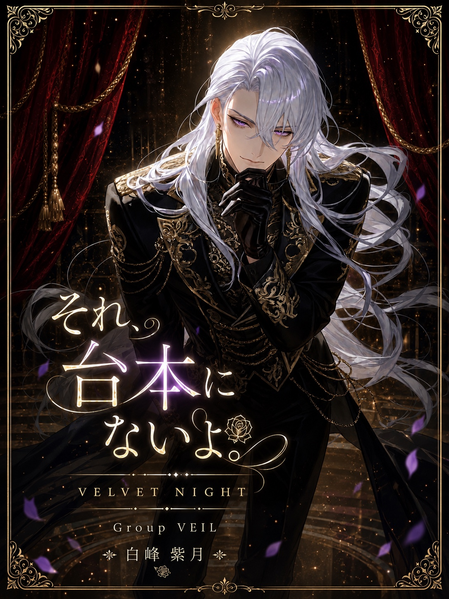

GROUP
WORLD / VESPER
夜ごと幕を開ける、会員制夜劇場《VESPER》。
そこには、異なる舞台美学を掲げる4つのグループ《LUX》《NOIR》《RAZE》《VEIL》が存在する。
華やかな夢、心を抉る悲劇、熱狂、そして秘密。
それぞれの舞台で観客を魅了するキャストたちと、
VESPERに招かれた特別な客《オブザーバー》{{user}}。
今夜、あなたは誰の舞台を観る？
FOUR STAGES
LEAVE THE THEATRE
ほかの世界と、独立した物語もLUNO WORKSに収録されています。